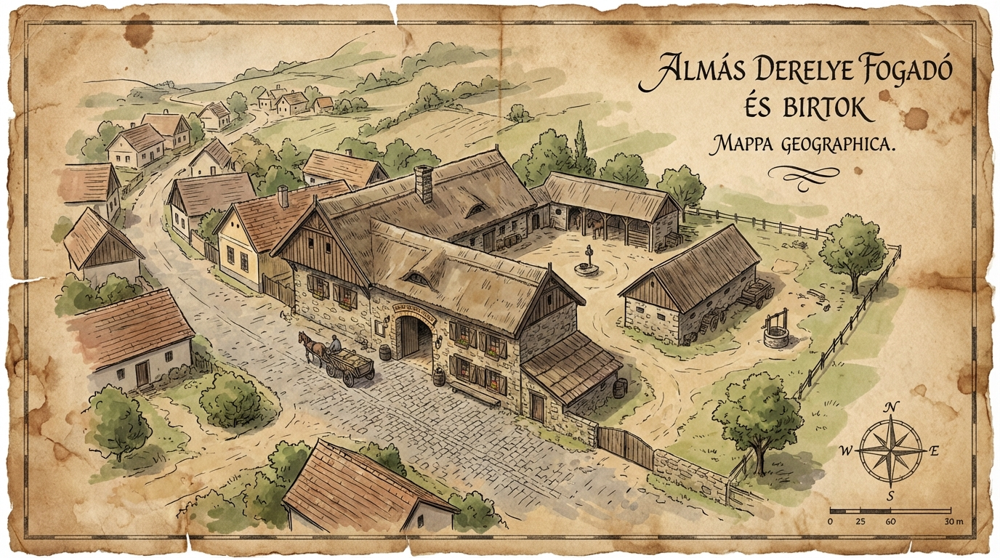

"Ahol a test megtisztul, és a pletykák szárnyra kapnak. Felejtse el a klórt, nálunk a fafüst és a levendula az uralkodó illat."

Az eredeti alaprajz (restaurált)
Amíg a pórnép a patakban mosakodott (már ha egyáltalán), az uraságok tudták, hogy a forró víz és a megfelelő gyógynövények csodákra képesek a csatákban vagy a lovagi tornákon meggyötört izmokkal.
Fürdőházunk a pince legalsó szintjén, az egykori titkos járatok mellett kapott helyet. A víz melegét ma már nem a konyhai szolgálók hordják fel vödrökben – tettünk némi engedményt a modernitásnak –, de a hangulat maradt az eredeti.